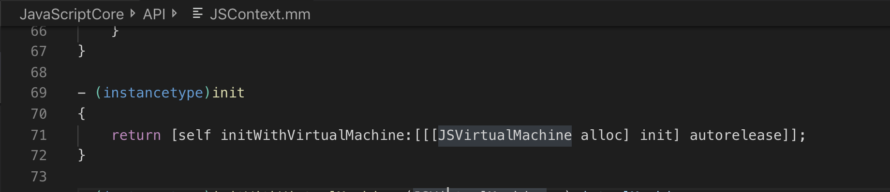

JavaScriptCore是苹果在开源的WebKit中的一部分，官方文档中说它是线程安全的，然而是否我们就可以完全依赖它了呢，我们在涉及多线程操作JavaScript时还需要哪些地方？
JSContext与JSVirtualMachine
JSContext是native代码执行JS代码的上下文，native可以向JSContext中注入方法和属性以供JS调用，相当于在JS的window对象上挂属性和方法，示例代码：
1 | JSContext *context = [[JSContext alloc] init]; |
一个JSContext属于一个JSVirtualMachine，而一个JSVirtualMachine中可以拥有多个JSContext，同一个JSVirtualMachine的不同JSContext共享同一个垃圾回收器，之间可以相互传值，而不同的JSVirtualMachine相互独立，当归属于不同VM的JSContext相互传值时会发生crash，示例图如下：
示例代码：
1 | JSContext *context = [[JSContext alloc] init]; |
多线程与死锁问题
JSVirtualMachine是线程安全的，其原理是每个线程通过JSContext执行JS代码时会加锁，该执行过程中其他线程如果想用同一VM的context执行JS代码则需要等待，所以如果是属于同一VM的不同JSContext完全没必要放在不同的线程执行，最后都会变成串行，甚至增加了线程切换的开销。
那么如果想真正并发执行JS代码，我们就需要将不同线程的JSContext放在不同的VM，虽然这样确实可以达到目的，但是笔者在开发过程中发现如果线程间存在依赖关系，很容易发生死锁现象，而且从堆栈中很难发现，下面将讲述两种死锁情形：
同一VM
同一VM的不同Context执行JS代码是串行的，假如把它们放在不同线程执行时，工作线程的Context执行JS代码时，主线程的Context如果也想执行JS代码，则需要等待，这个时候假如这个工作线程也需要等待主线程，显而易见会发生死锁，示例代码如下，最外层环境是主线程：
1 | dispatch_queue_t queue = dispatch_queue_create("000", DISPATCH_QUEUE_SERIAL); |
发生死锁后的主线程堆栈如下图所示：
不同VM
这里是本文的重点，按道理说，不同VM中是可以并发执行JS代码的，不需要相互等待，那为什么还会发生死锁呢？先上问题代码，同样最外层环境是主线程。
1 | self.context1 = [[JSContext alloc] init]; |
上面代码中context和context1是属于不同的VM，在主线程创建了一个定时器，每隔16毫秒会切换到工作线程执行一段JS代码，这段JS代码又会调用native提供的log接口，而log接口又会同步切换到主线程执行NSLog。该代码运行一段时间后（大约5~10s）就会停下来，此时便发生死锁了，死锁后主线程堆栈如下图所示：
更诡异的事情就是假如我们去掉示例代码的最后一行，就是主线程不执行任何JS代码，依然会发生死锁，堆栈也和上面一模一样。
既然发生死锁了，那么我们就一步步庖丁解牛吧，从堆栈看，线程111由于有dispatch_sync，所以要等待主线程，这个比较好理解，可是主线程的堆栈全是JSCore相关代码，根本无从下手，但是从名字上看似乎与RunloopTimer相关，而在我们刚刚把示例代码最后一行去掉后，主线程还剩下与JSCore相关的代码就只有创建JSContext了，OK，接下来我们就从源码入手，一探JSContext的构造函数。

这个构造函数不能更简单了，首先创建一个新的VM，然后调用另一个带VM参数的构造函数。那么我们接着看VM的构造函数，这里跳过JSVirtualMachine直接到JSC::VM，有兴趣的朋友可以自行查看。
VM的构造函数做了两件比较重要的事情，获取当前的RunLoop，以及向JSRunLoopTimer::Manager的单例注册当前对象，我们就接着看JSRunLooperTimer::Manager的registerVM方法。
从上图中明显看到，registerVM方法会间接向当前RunLoop添加一个Timer，每次RunLoop执行都会触发Timer的callback，而Timer的callback方法会调用timerDidFire方法，所以这也和上面我们看到的死锁堆栈是一致的，最后我们再看timerDidFire方法。
看到这里，应该真相大白了，timerDidFire每次执行的时候都会获取VM的锁，由于我们是dispatch_async到工作线程执行，所以假如我们运气好，以下两种情况下我们不会发生死锁：
- TimerDidFire先执行，那么主线程则不会被锁上
- 或者工作线程执行JS代码很快，直到主线程打印完’hhh’之后TimerDidFire才被触发，这样主线程也不会被锁
但假如是工作线程先执行JS代码，VM的锁被工作线程持有了，然后主线程触发TimerDidFire，那么主线程就要等待工作线程释放VM的锁，然而这时工作线程又要dispatch_sync主线程，就会造成相互等待，发生死锁了。
总结
不同VM的context并发执行JS代码发生死锁的情况，真是相当隐晦了，感谢ollyguo和enigmaliang大神的建议，才能让这个bug抽丝剥茧，慢慢的解开。
Anyway，通过这个bug我们以后在处理JSCore的多线程问题的时候，一定要注意，尽量让JSContext创建和执行JS代码都在同一个线程，不然一不小心就会犯下和笔者一样的错误了。